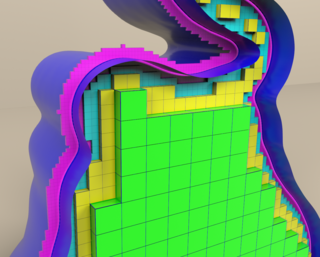

|

|
|
Abstract:
While pressure forces are often the bottleneck in (near-)inviscid fluid simulations, viscosity can impose orders of magnitude greater computational costs at lower Reynolds numbers.
We propose an implicit octree finite difference discretization that significantly accelerates the solution of the free surface viscosity equations using adaptive staggered grids, while supporting viscous buckling and rotation effects, variable viscosity, and interaction with scripted moving solids.
In experimental comparisons against regular grids, our method reduced the number of active velocity degrees of freedom by as much as a factor of 7.7 and reduced linear system solution times by factors between 3.8 and 9.4.
We achieve this by developing a novel adaptive variational finite difference methodology for octrees and applying it to the optimization form of the viscosity problem.
This yields a linear system that is symmetric positive definite by construction, unlike naive finite difference/volume methods, and much sparser than a hypothetical finite element alternative.
Grid refinement studies show spatial convergence at first order in L∞ and second order in L1, while the significantly smaller size of the octree linear systems allows for the solution of viscous forces at higher effective resolutions than with regular grids.
We demonstrate the practical benefits of our adaptive scheme by replacing the regular grid viscosity step of a commercial liquid simulator (Houdini) to yield large speed-ups, and by incorporating it into an existing inviscid octree simulator to add support for viscous flows.
Animations of viscous liquids pouring, bending, stirring, buckling, and melting illustrate that our octree method offers significant computational gains and excellent visual consistency with its regular grid counterpart.
|

![[PHOTO]](../../images/knight_small.png)